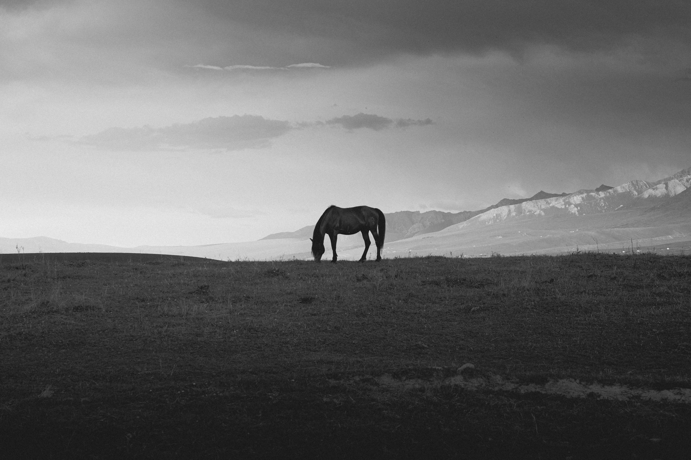

"There is nothing in this world that does not have a decisive moment."— Henri Cartier-Bresson
Life is an animated existence, on going forever, every millisecond turns into the unreplicable past. On the scale of human history, camera has only existed for a very short period, however, pulling out a phone and taking a snap has been such a natural part of our instinct. Why is mankind obsessed with taking pictures? I figured, the instant you press the shutter, you have created a frame, a space, an eternal moment, one life. What life do you want to create through your eyes as a student photographer?